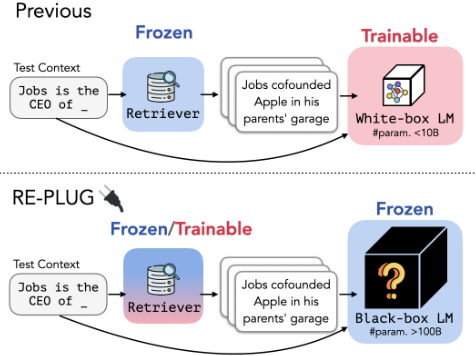
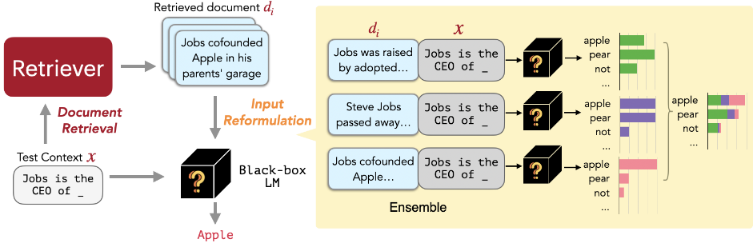
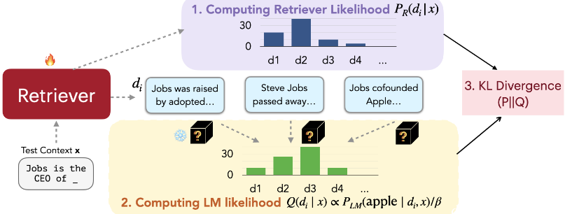
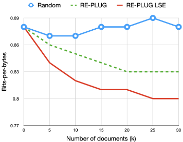
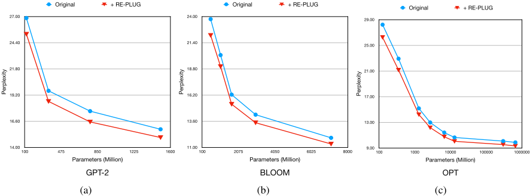
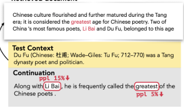

REPLUG：面向黑盒语言模型的检索增强框架
该论文解决的问题是：以往检索增强语言模型（如 RETRO、Atlas、kNN-LM）需要微调 LM 参数或访问其内部表示（白盒设定），无法用于只能通过 API 调用、不暴露内部表示的超大黑盒模型（如 GPT-3、Codex）。REPLUG 将 LM 视为黑盒，用可调的 dense retriever（Contriever + FAISS 索引）检索 top-k 文档，不把所有文档塞进一个上下文，而是每篇文档分别与输入拼接、并行送入冻结 LM，再按相似度加权 ensemble 输出概率，绕开上下文窗口对文档数量的限制。进一步提出 REPLUG LSR，把冻结 LM 当作打分函数，用其困惑度改善构造监督信号，通过最小化 KL 散度只训练检索器，使检索器适配目标 LM。关键结论：REPLUG LSR 使 GPT-3 175B 语言建模提升 6.3%、Codex 五-shot MMLU 提升 5.1%、NQ 提升 12.0%，在 few-shot 设定下超过 Atlas。对团队而言，这是"不训练模型、只优化检索与上下文组织"的代表性 RAG 方案，与知识库问答等场景直接相关。
以往检索增强语言模型需要微调 LM 或访问 LM 内部表示（白盒设定），无法应用于只能通过 API 访问、不暴露内部表示的超大黑盒 LM；同时 LM 的上下文窗口大小限制了能拼接进输入的检索文档数量。论文要在纯黑盒设定下让检索增强依然有效，并让检索器适配目标 LM。
REPLUG 框架：用双编码器 dense retriever（Contriever）以余弦相似度检索 top-k 相关文档，预先计算文档 embedding 并构建 FAISS 索引；不将全部文档拼入单个输入，而是每篇文档分别与输入上下文拼接、并行通过冻结 LM，按文档-输入相似度加权 ensemble 各次输出的 token 概率（可用算力换精度，且论文称相比全拼接无额外计算开销）。REPLUG LSR：将冻结 LM 作为打分函数，用"加入该文档后 LM 对 ground truth 输出的概率/困惑度改善"构造 LM likelihood，最小化其与检索 likelihood 之间的 KL 散度，只更新检索器参数，并每 T 步（实验中为 3k 步）异步重建 datastore 索引。
REPLUG LSR 使 GPT-3 (175B) 在 Pile 语言建模上相对 baseline 提升 6.3%；8 个模型平均，REPLUG 提升 4.7%、REPLUG LSR 提升 7.7%
MMLU 五-shot：REPLUG 使 Codex 提升 4.5%，REPLUG LSR 提升 5.1%，大幅超过检索增强模型 Atlas，略低于参数量三倍的 Flan-PaLM；STEM 类别仍提升 1.9%
开放域 QA：REPLUG LSR 使 Codex 在 NQ 提升 12.0%、TriviaQA 提升 5.0%，在 few-shot 设定下超过用 64 样本微调的 Atlas，达到该设定 SOTA（但仍落后于全量数据微调的检索增强模型）
通用性：REPLUG 对 GPT-2/OPT/BLOOM 各规模模型均降低困惑度，如 OPT-125M 困惑度改善 6.9%、OPT-66B 改善 5.6%，增益随模型规模保持一致
消融：ensemble 随机文档反而导致性能变差，说明增益来自相关检索而非 ensemble 本身；随文档数增加性能单调提升，约 10 篇文档即可获得大部分增益
定性分析：罕见实体从检索获益最大，如 "Li Bai" 对应 token 困惑度改善 15%，整段续写困惑度改善 11%
与 RETRO/Atlas 等需梯度更新 LM 参数的白盒方法、kNN-LM 等需访问内部表示的方法不同，REPLUG 只依赖输入-输出接口，可即插即用地增强任意黑盒 LM；作者称这是首个证明检索对 >100B 大模型（同时降低困惑度与提升 in-context learning）有效的工作；理念上提出"让检索器适配 LM"，与此前"让 LM 适配检索器"的方向相反；并用并行拼接+加权 ensemble 的方式绕开上下文窗口对文档数的限制。
相关度级别：high
命中能力域：3.1 上下文工程与记忆
理由：团队定位是"把模型用好而非训练模型"，与本文黑盒设定完全一致：不改 LM 参数、只优化检索器与上下文组织方式。论文直接命中 3.1（RAG/检索增强、上下文窗口管理）：(1) 每文档单独拼接+加权 ensemble 是候选文档多、上下文窗口放不下时的替代上下文组织方案；(2) REPLUG LSR 用下游 LM 的困惑度作为检索器训练信号，是"让检索为下游模型优化"的可落地思路，可直接用于团队知识库问答的检索器调优。
建议动作：作为方法参考存档
arXiv:2301.12652v4 [cs.CL] 2023年5月24日
Weijia Shi, 1 * Sewon Min, 1 Michihiro Yasunaga, 2 Minjoon Seo, 3 Rich James, 4 Mike Lewis, 4 Luke Zettlemoyer 1 4 Wen-tau Yih 4
我们提出 REPLUG，这是一种检索增强的语言建模框架，它将语言模型（LM）视为黑盒，并使用一个可调优的检索模型对其进行增强。与以往通过特殊的交叉注意力机制训练语言模型以编码检索文本的检索增强语言模型不同，REPLUG 只是将检索到的文档前置拼接到冻结黑盒 LM 的输入之前。这一简单设计可以轻松应用于任何现有的检索模型和语言模型。此外，我们证明 LM 可以用来监督检索模型，从而使检索模型能够找到帮助 LM 做出更好预测的文档。我们的实验表明，配备调优后检索器的 REPLUG 将 GPT-3（175B）在语言建模上的性能显著提升了 6.3%，并将 Codex 在 five-shot MMLU 上的性能提升了 5.1%。
Large language models (LLMs) such as GPT-3 (Brown et al., 2020a) and Codex (Chen et al., 2021a), have demonstrated impressive performance on a wide range of language tasks. These models are typically trained on very large datasets and store a substantial amount of world or domain knowledge implicitly in their parameters. However, they are also prone to hallucination and cannot represent the full long tail of knowledge from the training corpus. Retrieval-augmented language models (Khandelwal et al., 2020; Borgeaud et al., 2022; Izacard et al., 2022b; Yasunaga et al., 2022), in contrast, can retrieve knowledge from an external datastore when needed, potentially reducing hallucination and increasing coverage. Previous approaches of retrieval-augmented language models require access to the internal LM representations (e.g., to train the model (Borgeaud et al., 2022;
1 University of Washington 2 Stanford University 3 KAIST 4 Meta AI.
* Work done while the first author was interning at Meta AI. Correspondence to: Weijia Shi <swj0419@uw.edu>.

Izacard et al., 2022b) or to index the datastore (Khandelwal et al., 2020)), and are thus difficult to be applied to very large LMs. In addition, many best-in-class LLMs can only be accessed through APIs. Internal representations of such models are not exposed and fine-tuning is not supported.
In this work, we introduce REPLUG ( Re trieve and Plug ), a new retrieval-augmented LM framework where the language model is viewed as a black box and the retrieval component is added as a tuneable plug-and-play module. Given an input context, REPLUG first retrieves relevant documents from an external corpus using an off-the-shelf retrieval model. The retrieved documents are prepended to the input context and fed into the black-box LM to make the final prediction. Because the LM context length limits the number of documents that can be prepended, we also introduce a new ensemble scheme that encodes the retrieved documents in parallel with the same black-box LM, allowing us to easily trade compute for accuracy. As shown in We also introduce REPLUG LSR (REPLUG with L MS upervised R etrieval), a training scheme that can further improve the initial retrieval model in REPLUG with supervision signals from a black-box language model. The key idea is to adapt the retriever to the LM, which is in contrast to prior work (Borgeaud et al., 2022) that adapts language models to the retriever. We use a training objective which prefers retrieving documents that improve language model perplexity, while treating the LM as a frozen, black-box scoring function.
我们的实验表明，REPLUG 能够提升多种黑盒 LM 在语言建模和下游任务上的性能，包括 MMLU（Hendrycks et al., 2021）和开放域问答（open-domain QA）（Kwiatkowski et al., 2019; Joshi et al., 2017）。例如，REPLUG 可以将 Codex（175B）在 MMLU 上的性能提升 4.5%，取得与经过指令微调的 540B Flan-PaLM 相当的结果。此外，使用我们的训练方案对检索器进行调优（即 REPLUG LSR）能带来进一步的提升，包括 GPT-3 175B 语言建模性能最高提升 6.3%。据我们所知，我们的工作首次展示了检索对大型 LM（模型参数超过 100B）的益处，既能降低 LM 的困惑度，又能提升上下文学习（in-context learning）的性能。我们将我们的贡献总结如下：
黑盒语言模型 大型语言模型（Large Language Models，即参数量超过 100B），例如 GPT-3（Brown et al., 2020a）、Codex（Chen et al., 2021a）和 Yuan 1.0（Wu et al., 2021），出于商业考虑并未开源，仅以黑盒 API 的形式提供，用户只能通过这些 API 发送查询并接收响应。另一方面，即使是开源的语言模型，如 OPT-175B（Zhang et al., 2022a）和 BLOOM-176B（Scao et al., 2022），要在本地运行和微调也需要大量计算资源。例如，微调 BLOOM-176B 需要 72 块 A100 GPU（80GB 显存，每块 1.5 万美元（Younes Belkda, 2022）），这使得资源有限的研究人员和开发者难以使用这些模型。传统上，检索增强模型框架（Khandelwal et al., 2020; Borgeaud et al., 2022; Yu, 2022; Izacard et al., 2022b; Goyal et al., 2022）一直聚焦于白盒设定，即对语言模型进行微调以融入检索到的文档。然而，大型语言模型日益增大的规模及其黑盒特性使得这种方法变得不可行。为应对大型语言模型带来的挑战，我们研究黑盒设定下的检索增强，在这种设定中，用户只能获取模型的预测结果，而无法访问或修改其参数。
检索增强模型（Retrieval-augmented Models） 利用从各种知识库中检索到的相关信息来增强语言模型，已被证明能有效提升多种 NLP 任务的性能，包括语言建模（Min et al., 2022; Borgeaud et al., 2022; Khandelwal et al., 2020）和开放域问答（Lewis et al., 2020; Izacard et al., 2022b; Hu et al., 2022）。具体而言，以输入作为查询（query），(1) 检索器首先从语料库中检索出一组文档（即 token 序列），然后 (2) 语言模型将检索到的文档作为附加信息纳入，从而做出最终预测。这种检索方式既可以应用于编码器-解码器（encoder-decoder）模型（Yu, 2022; Izacard et al., 2022b），也可以应用于仅解码器（decoder-only）模型（Khandelwal et al., 2020; Borgeaud et al., 2022; Shi et al., 2022; Rubin et al., 2022）。例如，Atlas（Izacard et al., 2022b）通过将文档建模为隐变量，与检索器联合微调编码器-解码器模型；而 RETRO（Borgeaud et al., 2022）则修改仅解码器架构以纳入检索到的文本，并从头预训练语言模型。这两种方法都需要通过梯度下降更新模型参数，因此无法应用于黑盒 LM。另一类检索增强 LM，如 kNN-LM（Khandelwal et al., 2020; Zhong et al., 2022），则在推理时检索一组 token，并在 LM 的下一 token 分布与由检索到的 token 计算得到的 kNN 分布之间进行插值。尽管 kNN-LM 不需要额外训练，但它需要访问 LM 的内部表示来计算 kNN 分布，而对于 GPT-3 这类大型 LM 而言，这些内部表示并不总是可获得的。在本工作中，我们研究利用检索来改进大型黑盒语言模型的方法。虽然同期工作（Mallen et al., 2022; Si et al., 2023; Yu et al., 2023; Khattab et al., 2022）已经证明，使用冻结的检索器可以提升 GPT3 在开放域问答上的性能，但我们以更一般的设定来处理这一问题，其中包括语言建模和理解任务。我们还提出了一种集成方法以纳入更多文档，以及一种训练方案来进一步使检索器适配大型 LM。

We introduce REPLUG ( Re trieve and Plug ), a new retrievalaugmented LM paradigm where the language model is treated as black box and the retrieval component is added as a potentially tuneable module.
As shown in Figure 2, given an input context, REPLUG first retrieves a small set of relevant documents from an external corpus using a retriever (§3.1). Then we pass the concatenation of each retrieved document with the input context through the LM in parallel, and ensemble the predicted probabilities (§3.2).
给定输入上下文 x，检索器旨在从语料库 D = { d 1 ...d m } 中检索出与 x 相关的一小部分文档。遵循先前工作（Qu et al., 2021; Izacard & Grave, 2021b; Ni et al., 2021），我们使用基于双编码器架构的稠密检索器，其中一个编码器被用于对输入上下文 x 和文档 d 进行编码。具体而言，该编码器通过取 d 中各词元的最后隐藏表示的平均池化，将每个文档 d ∈ D 映射为嵌入 E ( d )。在查询时，将同一编码器应用于输入上下文 x，以获得查询嵌入 E ( x )。查询嵌入与文档嵌入之间的相似度通过二者的余弦相似度来计算：
在此步骤中，检索出与输入 x 相比相似度得分最高的 topk 个文档。
为了实现高效检索，我们预先计算每个文档 d ∈ D 的嵌入，并在这些嵌入之上构建 FAISS 索引（Johnson et al., 2019）。
检索到的 topk 个文档提供了关于原始输入上下文 x 的丰富信息，有可能帮助语言模型（LM）做出更好的预测。将检索到的文档纳入 LM 输入的一种简单方法，是在 x 之前拼接全部 k 个文档。然而，鉴于语言模型的上下文窗口大小，这种简单方案从根本上受限于所能纳入的文档数量（即 k）。为了解决这一局限，我们采用如下所述的集成策略。假设 D ′ ⊂ D 由根据式 (1) 中打分函数得出的与 x 最相关的 k 个文档组成。我们将每个文档 d ∈ D ′ 前置拼接到 x 之前，分别将该拼接结果送入 LM，然后对全部 k 次运行所得的输出概率进行集成。形式化地，给定输入上下文 x 及其 topk 个相关文档 D ′，下一个 token y 的输出概率按如下加权平均集成方式计算：
其中，◦ 表示两个序列的拼接，权重 λ ( d, x ) 基于文档 d 与输入上下文 x 之间的相似度得分：
尽管我们的集成方法需要运行 LM k 次，但交叉注意力是在每个检索到的文档与输入上下文之间进行的。因此，与前置拼接全部检索文档的方法相比，我们的集成方法不会带来额外的计算成本开销。
我们没有仅仅依赖现有的神经稠密检索模型（Karpukhin et al., 2020a; Izacard et al., 2022a; Su et al., 2022），而是进一步提出了 REPLUG LSR（REPLUG with LM-Supervised Retrieval，即采用语言模型监督检索的 REPLUG），该方法通过让语言模型（LM）本身提供关于应当检索哪些文档的监督信息，来对 REPLUG 中的检索器进行调整。
受 Sachan et al. (2022) 启发，我们的方法可以看作是调整检索到的文档的概率，使之与语言模型输出序列困惑度所对应的概率相匹配。换言之，我们希望检索器能够找到使困惑度得分更低的文档。如图 3 所示，我们的训练算法由四个步骤组成：(1) 检索文档并计算检索似然（§4.1）；(2) 由语言模型对检索到的文档进行打分（§4.2）；(3) 通过最小化检索似然与 LM 打分分布之间的 KL 散度来更新检索模型参数（§4.3）；(4) 异步更新数据存储索引（§4.4）。
如 §3.1 所述，给定输入上下文 x，我们从语料库 D 中检索相似度得分最高的 k 个文档 D ′ ⊂ D。随后，我们计算每个检索到的文档 d 的检索似然：
其中，γ 是控制 softmax 温度的超参数。理想情况下，检索似然应通过对语料库 D 中的所有文档进行边缘化来计算，但这在实践中是难以处理的。因此，我们仅对检索到的文档 D ′ 进行边缘化，从而近似计算检索似然。
我们将 LM 用作评分函数，以衡量每个文档能在多大程度上改善 LM 的困惑度。具体而言，我们首先计算 P LM ( y | d, x )，即在给定输入上下文 x 和文档 d 的条件下，真实输出 y 的 LM 概率。该概率越高，文档 d i 对改善 LM 困惑度的效果就越好。随后，我们按如下方式计算每个文档 d 的 LM 似然：
其中，β 是另一个超参数。
给定输入上下文 x 和对应的真实续写 y，我们计算检索似然和语言模型似然。稠密检索器通过最小化这两个分布之间的 KL 散度来进行训练：
其中，B 是一组输入上下文。在最小化损失时，我们只能更新检索模型的参数。由于我们的黑盒假设，LM 的参数是固定的。
由于检索器中的参数在训练过程中会被更新，先前计算的文档嵌入已不再是最新的。因此，遵循 Guu et al. (2020) 的做法，我们每隔 T 个训练步骤重新计算文档嵌入，并使用新的嵌入重建高效搜索索引。然后，我们使用新的文档嵌入和索引进行检索，并重复训练过程。
在本节中，我们描述训练过程的细节。我们首先介绍 REPLUG 中的模型设置（§5.1），然后介绍在 REPLUG LSR 中训练检索器的过程（§5.2）。
理论上，任何类型的检索器，无论是稠密的（Karpukhin et al., 2020b; Ni et al., 2021）还是稀疏的（Robertson et al., 2009），都可以用于 REPLUG。遵循先前的工作（Izacard et al., 2022b），我们采用 Contriever（Izacard et al., 2022a）作为 REPLUG 的检索模型，因为它已展现出强大的性能。
对于 REPLUG LSR，我们使用 Contriever 模型（Izacard et al., 2022a）来初始化检索器。我们使用 GPT-3 Curie（Brown et al., 2020b）作为监督语言模型（LM）来计算 LM 似然。
训练数据：我们使用从 Pile 训练数据（Gao et al., 2020）中采样得到的 800K 条、每条 256 个 token 的序列作为训练查询。每个查询被切分为两部分：前 128 个 token 用作输入上下文 x，最后 128 个 token 用作真实续写 y。对于外部语料库 D，我们从 Pile 训练数据中采样 36M 篇、每篇 128 个 token 的文档。为避免检索过于简单，我们确保外部语料库中的文档与采样训练查询所来源的文档不重叠。

训练细节：为了使训练过程更加高效，我们预先计算外部语料库 D 的文档嵌入，并构建 FAISS 索引（Johnson et al., 2019）以实现快速相似度搜索。给定一个查询 x，我们从 FAISS 索引中检索前 20 篇文档，并以 0.1 的温度计算检索似然和 LM 似然。我们使用 Adam 优化器（Kingma & Ba, 2015）训练检索器，学习率为 2e-5，批大小为 64，预热比例为 0.1。我们每 3k 步重新计算一次文档嵌入，并对检索器进行总共 25k 步的微调。
我们在语言建模（§6.1）以及 MMLU（§6.2）和开放域问答（§6.3）等下游任务上进行了评估。在所有设置中，REPLUG ˜ 提升了各种黑盒语言模型的性能，展示了我们方法的有效性和通用性。
数据集 The Pile（Gao et al., 2020）是一个语言建模基准测试（benchmark），由来自网页、代码和学术论文等不同领域的文本来源组成。遵循先前工作，我们在每个子集域上报告每 UTF-8 编码字节的比特数（BPB）作为指标。
基线 我们将 GPT-3 和 GPT-2 系列语言模型作为基线。GPT-3 的四个模型（Davinci、Curie、Baddage 和 Ada）是只能通过 API 访问的黑盒模型。
我们的模型 我们在基线之上加入 REPLUG 和 REPLUG LSR。我们随机子采样了 Pile 训练数据（367M 篇文档，每篇 128 个 token），并将其用作所有模型的检索语料库。由于 Pile 数据集已致力于在训练、验证和测试划分之间对文档进行去重（Gao et al., 2020），我们未做额外的过滤。对于 REPLUG 和 REPLUG LSR，我们均使用长度为 128 个 token 的上下文进行检索，并采用集成方法（第 3.2 节）在推理过程中融合检索到的前 10 篇文档。
结果 表 1 报告了原始基线、经 REPLUG 增强的基线以及经 REPLUG LSR 增强的基线的结果。我们观察到，REPLUG 和 REPLUG LSR 均显著优于基线。这表明，仅向冻结的语言模型添加一个检索模块（即黑盒设置）就能有效提升不同规模的语言模型在语言建模任务上的性能。此外，REPLUG LSR 始终大幅优于 REPLUG。具体而言，在 8 个模型上取平均，REPLUG LSR 相比基线带来 7.7% 的提升，而 REPLUG 的提升为 4.7%。这表明将检索器进一步适配到目标语言模型（LM）是有益的。
数据集 大规模多任务语言理解（Massive Multi-task Language Understanding，MMLU (Hendrycks et al., 2021)）是一个多项选择问答数据集，涵盖来自 57 个任务的考试题目，包括数学、计算机科学、法律、美国历史等。这 57 个任务被划分为 4 个类别：人文学科、STEM、社会科学和其他。遵循 Chung et al. (2022a) 的做法，我们在 5-shot 上下文学习（in-context learning）设置下评估 REPLUG。
| Model | # Parameters | Original | + REPLUG | Gain% | + REPLUG LSR | Gain% | |
|---|---|---|---|---|---|---|---|
| GPT-2 | Small | 117M | 1.33 | 1.26 | 5.3 | 1.21 | 9 |
| Medium | 345M | 1.2 | 1.14 | 5 | 1.11 | 7.5 | |
| Large | 774M | 1.19 | 1.15 | 3.4 | 1.09 | 8.4 | |
| XL | 1.5B | 1.16 | 1.09 | 6 | 1.07 | 7.8 | |
| GPT-3 | Ada | 350M | 1.05 | 0.98 | 6.7 | 0.96 | 8.6 |
| (black-box) | Babbage | 1.3B | 0.95 | 0.9 | 5.3 | 0.88 | 7.4 |
| (black-box) | Curie | 6.7B | 0.88 | 0.85 | 3.4 | 0.82 | 6.8 |
| (black-box) | Davinci | 175B | 0.8 | 0.77 | 3.8 | 0.75 | 6.3 |
| Model | | # Parameters | Original | + REPLUG | Gain% | + REPLUG LSR | Gain% |
| Model | # Parameters | Humanities | Social. | STEM | Other | All |
|---|---|---|---|---|---|---|
| Codex | 175B | 74.2 | 76.9 | 57.8 | 70.1 | 68.3 |
| PaLM | 540B | 77.0 | 81.0 | 55.6 | 69.6 | 69.3 |
| Flan-PaLM | 540B | - | - | - | - | 72.2 |
| Atlas | 11B | 46.1 | 54.6 | 38.8 | 52.8 | 47.9 |
| Codex + REPLUG | 175B | 76.0 | 79.7 | 58.8 | 72.1 | 71.4 |
| Codex + REPLUG LSR | 175B | 76.5 | 79.9 | 58.9 | 73.2 | 71.8 |
| Model | # Parameters | Humanities | Social. | STEM | Other | All |
基线 我们考虑两组强大的已有模型作为比较基线。第一组基线是最先进的大语言模型（LLM），包括 Codex 1 (Chen et al., 2021b)、PaLM (Chowdhery et al., 2022) 和 FlanPaLM (Chung et al., 2022b)。根据 Chung et al. (2022b)，这三个模型在 MMLU 排行榜上位列前三。第二组基线由检索增强语言模型组成。我们仅将 Atlas (Izacard et al., 2022b) 纳入该组，因为没有其他检索增强语言模型（LM）在 MMLU 数据集上被评估过。Atlas 同时训练检索器和语言模型，我们认为这属于白盒检索 LM 设置。
我们的模型 我们仅将 REPLUG 和 REPLUG LSR 添加到 Codex 上，因为 PaLM 和 Flan-PaLM 等其他模型并不对外公开。我们使用测试问题作为查询，从 Wikipedia (2018, December) 中检索 10 篇相关文档，并将每篇检索到的文档前置到测试问题之前，从而得到 10 个独立的输入。这些输入随后被分别送入语言模型，再将输出概率集成在一起。
1 Code-Davinci-002
结果 表 2 展示了各基线、REPLUG 和 REPLUG LSR 在 MMLU 数据集上的结果。我们观察到，REPLUG 和 REPLUG LSR 分别将原始 Codex 模型提升了 4.5% 和 5.1%。此外，REPLUG LSR 大幅超越了先前的检索增强语言模型 Atlas，证明了我们黑盒检索语言模型设置的有效性。尽管我们的模型性能略低于 FlanPaLM，但这仍然是一个很强的结果，因为 Flan-PaLM 的参数量是我们的模型的三倍。如果我们能够访问该模型，我们预期 REPLUG LSR 还能进一步提升 Flan-PaLM 的性能。
另一个有趣的观察是，即使在 STEM 类别中，REPLUG LSR 也比原始模型高出 1.9%。这表明检索或许能够提升语言模型的问题求解能力。
最后，我们在两个开放域问答（open-domain QA）数据集上进行评估：Natural Questions (NQ) (Kwiatkowski et al., 2019) 和 TriviaQA (Joshi et al., 2017)。
数据集 NQ 和 TriviaQA 是两个开放域问答数据集，由从 Wikipedia 和网络收集的问题与答案组成。遵循先前的工作 (Izacard & Grave, 2021a; Si et al., 2022)，我们报告 TriviaQA 过滤集上的结果。在评估方面，我们考虑少样本（few-shot）设置（即模型仅获得少量训练样本）和全量数据（full data）设置（即模型获得所有训练样本）。
2 Si et al. (2022) 使用 contriever 检索到的 10 个文档的拼接来增强 Codex。
| Model | NQ.Few-shot | NQ.Full | TQA.Few-shot | TQA.Full |
|---|---|---|---|---|
| Chinchilla | 35.5 | - | 64.6 | - |
| PaLM | 39.6 | - | - | - |
| Codex | 40.6 | - | 73.6 | - |
| RETRO † | - | 45.5 | - | - |
| R2-D2 † | - | 55.9 | - | 69.9 |
| Atlas † | 42.4 | 60.4 | 74.5 | 79.8 |
| Codex + Contriever cc 2 | 44.2 | - | 76.0 | - |
| Codex + REPLUG | 44.7 | - | 76.8 | - |
| Codex + REPLUG LSR | 45.5 | - | 77.3 | - |
| Model | NQ.Few-shot | NQ.Full | TQA.Few-shot | TQA.Full |
基线 我们将我们的模型与多个最先进的基线进行比较，涵盖少样本设置和全量训练数据两种情况。第一组模型由强大的大语言模型组成，包括 Chinchilla (Hoffmann et al., 2022)、PaLM (Chowdhery et al., 2022) 和 Codex。这些模型均在少样本设置下使用上下文学习（in-context learning）进行评估，其中 Chinchilla 和 PaLM 使用 64 个示例进行评估，Codex 使用 16 个示例。第二组用于比较的模型包括检索增强语言模型，例如 RETRO (Borgeaud et al., 2021)、R2-D2 (Fajcik et al., 2021) 和 Atlas (Izacard et al., 2022b)。所有这些检索增强模型都在训练数据上进行了微调，或采用少样本设置，或使用全量训练数据。具体而言，Atlas 在少样本设置下于 64 个样本上进行了微调。
我们的模型 我们将 REPLUG 和 REPLUG LSR 添加到 Codex 中，以 Wikipedia（2018 年 12 月）作为检索语料库，在 16-shot 上下文学习中评估模型。与语言建模和 MMLU 中的设置类似，我们使用我们提出的集成方法纳入检索到的前 10 个文档。
结果 如表 3 所示，REPLUG LSR 将原始 Codex 在 NQ 上的性能显著提升了 12.0%，在 TQA 上提升了 5.0%。它超越了此前最佳的模型 Atlas（该模型使用 64 个训练样本进行微调），在少样本设置中取得了新的最先进（state-of-the-art）结果。然而，这一结果仍落后于在全量训练数据上微调的检索增强语言模型的性能。这可能是由于训练集中存在近重复的测试问题（例如，Lewis et al. (2021) 发现 NQ 中有 32.5% 的测试问题与训练集重叠）。

我们方法设计的核心是使用一种集成（ensemble）方法，将不同传递（pass）的输出概率组合起来，其中每个检索到的文档分别被前置到输入中，并送入语言模型。为了研究这些增益是否仅仅来自集成方法，我们将我们的方法与集成随机文档进行比较。为此，我们随机采样若干文档，将每个随机文档与输入拼接，并对不同运行的输出进行集成（称为 "random"）。如图 6 所示，我们在 Pile 上评估了 GPT-3 Curie 分别在随机文档、REPLUG 检索到的文档以及 REPLUG LSR 检索到的文档增强下的性能。我们观察到，集成随机文档会导致更差的性能，这表明 REPLUG 的性能提升并非仅仅来自集成效应。相反，集成相关文档对 REPLUG 的成功至关重要。此外，随着被集成文档数量的增加，REPLUG 和 REPLUG LSR 的性能单调提升。然而，少量文档（例如 10 个）就足以获得较大的性能提升。

Here we further study whether REPLUG could enhance diverse language model families that have been pre-trained using different data and methods. Specifically, we focus on three groups of language models with varying sizes: GPT2 (117M, 345M, 774M, 1.5B parameters) (Brown et al., 2020a), OPT (125M, 350M, 1.3B, 2.7B, 6.7B, 13B, 30B, 66B) (Zhang et al., 2022b) and BLOOM (560M, 1.1B, 1.7B, 3B and 7B) (Scao et al., 2022). We evaluate each model on Wikitext-103 (Stephen et al., 2017) test data and report its perplexity. For comparison, we augment each model with REPLUG that adopts the ensemble method to incorporate top 10 retrieved documents. Following prior work (Khandelwal et al., 2020), we use Wikitext-103 training data as the retrieval corpus.
Figure 5 shows the performance of different-sized language models with and without REPLUG. We observe that the performance gain brought by REPLUG stays consistent with model size. For example, OPT with 125M parameters achieves 6.9% perplexity improvement, while OPT with 66B parameters achieves 5.6% perplexity improvement. Additionally, REPLUG improves the perplexity of all the model families. This indicates that REPLUG is applicable to diverse language models with different sizes.
为了理解 REPLUG 为何能提升语言建模性能，我们对 REPLUG 使困惑度下降的示例进行了人工分析。我们发现，当文本包含稀有实体时，REPLUG 更有帮助。图 6 展示了来自 Wikitext-103 测试集的一个测试上下文及其续写内容。对于 REPLUG，我们使用该测试上下文作为查询，从 Wikitext-103 训练数据中检索相关文档。随后，我们分别使用原始 GPT-2 1.5B 及其 REPLUG 增强版本计算该续写内容的困惑度。在融入检索到的文档后，续写内容的困惑度改善了 11%。在续写内容的所有词元（token）中，我们发现 REPLUG 对稀有实体名称 "Li Bai" 最有帮助。这可能是因为原始语言模型（LM）缺乏关于该稀有实体名称的充分信息。然而，通过融入检索到的文档，REPLUG 能够将该名称与检索文档中的相关信息进行匹配，从而取得了更好的性能。

我们提出了 REPLUG，这是一种检索增强的语言建模范式，它将语言模型视为黑盒，并利用可调优的检索模型对其进行增强。我们的评估表明，REPLUG 可以与任何现有语言模型集成，以提升其在语言建模或下游任务上的性能。这项工作为将检索集成到大规模黑盒语言模型中开辟了新的可能性，并表明即使是最先进的大规模语言模型（LM）也能从检索中受益。然而，REPLUG 缺乏可解释性，因为模型何时依赖检索到的知识、何时依赖参数化知识尚不明确。未来的研究可以专注于开发更具可解释性的检索增强语言模型。